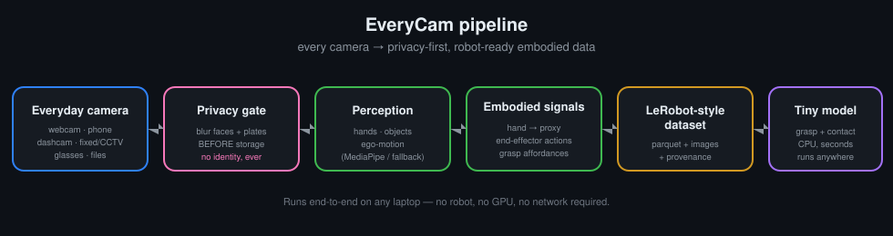

What is EveryCam? 🤖
In one sentence — and no jargon.
Robots are great at repeating one factory task, but surprisingly bad at simple things you do without thinking: picking up a cup, folding a shirt, opening a drawer. To learn a physical skill, a robot needs thousands of examples, and collecting those with real robots is slow and expensive.
But humans already do these tasks all day, on camera. EveryCam turns "a human hand doing a thing in a video" into something a robot can read — so robots can learn from us, using cheap everyday cameras instead of costly robot farms. And it protects privacy by blurring faces before anything is saved.
How it works
An assembly line for a video clip.

The technologies, in plain words
You'll see these terms around the project — here's what they actually mean.
AI that acts in the real world (robots), not just text on a screen.
Teaching computers to "see" — find hands, objects, and motion in pictures.
Software (e.g. MediaPipe) that locates the points of a hand in a video.
A fancy word for "where do I grab this / what can I do with it?"
A robot learning by copying a demonstration — like learning a dance by watching.
A neat pile of examples used to train AI, saved in a format robot tools can read.
Removing things that identify a person — here, blurring faces and plates.
Free public code; a "pull request" is a polite proposal to add your change.
Privacy comes first 🛡️
Contribute your data (no coding needed)
Fill this in to create a "dataset card" and open a pre-filled GitHub issue. A maintainer adds it to the project. Only share videos you have the right to share.
Prefer the command line? See
CONTRIBUTING-DATA.md
or run bash scripts/webcam_contribute.sh.